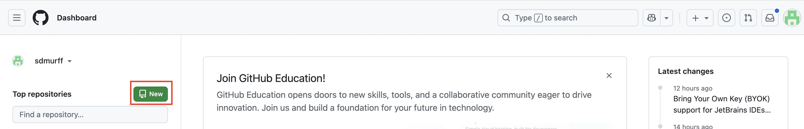
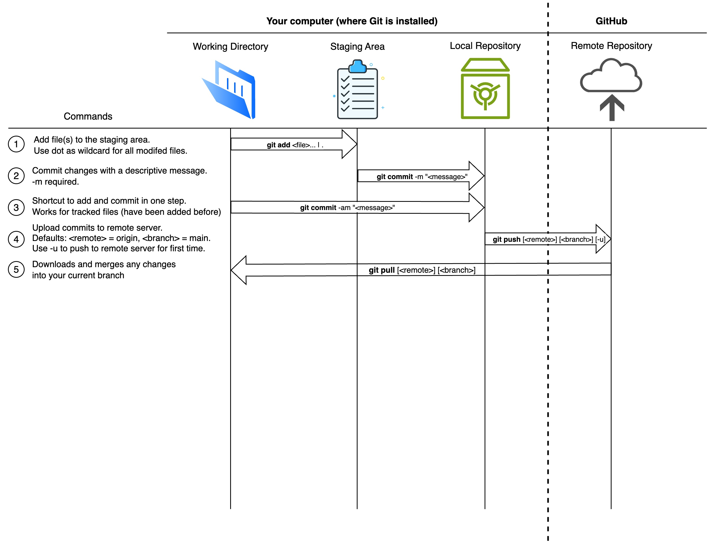

# Check if you have Git installed on your computer
git --version
# Install git on Windows if needed
winget install --id Git.Git -e --source winget
# Install git on Mac if needed
brew install gitGitHub & Deployment
Git & GitHub
Although the terms Git and GitHub are often used interchangeably, they are two distinct tools that work together.
Git is an open-source version control system that individual users install on their local computer. It tracks every change you make to the files in a specified folder (called a repository) and acts like a time machine allowing you to go back to any previous version, see what changed, when it changed, and who made the change. Git is the most widely used version control system in the world, with an estimated 90–95% of professional software development teams using it today.
We will be using git to version control your projects throughout this course. Take a moment to to make sure you have Git installed on your computer by running the following from the command line:
GitHub is a cloud-based platform, owned by Microsoft, that allows you to store your Git repositories online, making it easy to collaborate with others over the internet. You can think of GitHub as the Google Drive or Dropbox of your code files, but with additional tools for teamwork and project management that extend the use of Git from individuals to entire teams. Developers use Git on their local machines and push their files and subsequent changes to GitHub when they’re ready to share or back them up online. Product Managers and other collaborators can then review, comment on, and track progress through the GitHub web interface.
We will be using GitHub to deploy applications to the internet and create a public facing project portfolio you can share with employers and others.
If you don’t have one already, sign-up for a GitHub account using the following steps:
- Navigate to https://github.com/.
- Click Sign up.
- Alternatively, click on Continue with Google to sign up using social login.
- Follow the prompts to create your personal account.
- In the upper-right corner of any page, select , then click New repository.
- Name the repository whatever you want.
 ## The Git<–>GitHub Workflow
A typical workflow in git consists of editing files in your working directory, staging them, which just means listing which ones you want to save, saving or committing them and lastly, pushing them to a remote cloud hosted folder (called a respository) for others to use.
1. Working Directory
The Working Directory is the folder on your computer where you’re actively making changes to files such as writing code, editing documents, or creating new files.
A Working Directory is just a regular folder you’re already familiar with, the kind you see in Windows Explorer or Mac Finder.
2. Staging Area
The Staging Area is a place where you catalogue (or “stage”) the edited files from the Working Directory that you want to include in your next snapshot (version) of your project.
Each snapshot is called a commit, and the Staging Area lets you choose exactly which edited files will be saved in the next official version of your project.
Even if you’ve edited, say, 5 files, you may only want to include 3 of those changed files in your next commit. The Staging Area is where you make these choices, it gives you control over what gets saved and when.
You may hear the Staging Area referred to as the index because that’s the technical name Git uses internally for this part of the system.
3. Local Repository
The Local Repository is the part of Git on your computer that stores the official history of your project: all the snapshots (commits) you’ve made so far.
When you commit (i.e., Save) changes from the Staging Area, Git saves a permanent version of those changes in your Local Repository. This allows you to go back in time, review past versions, undo mistakes, or see who changed what and why.
You can think of the Local Repository as your personal project archive that keeps track of every meaningful step in your project’s development.
Unlike the Working Directory, the Local Repository is not a folder you typically see in Finder or Windows Explorer, rather, it lives inside a hidden folder named .git. Git uses the hidden .git folder to store all your commits as well as other project related information. It is possible to unhide the .git folder and browse it like a normal folder but many of the files are not human readable since they are designed for Git’s internal use and may look confusing or cryptic to most users.
Even though the files in the .git folder aren’t meant to be read directly by humans, Git commands allow you to retrieve any saved snapshot of your project and restore files in their original, human-readable form.
So the local repository contains everything from your Working Directory that you chose to stage and then commit.
Think of the .git folder as a vault of your project’s history. You can’t really read the vault contents directly, but Git gives you keys (commands) to retrieve and restore anything you’ve ever committed.
4. Remote Repository
The Remote Repository is a copy of your Local Repository that is stored on the internet using a platform like GitHub.
It contains the same kinds of commits and project history as your Local Repository, but it’s shared with others, which makes it perfect for collaborating with teammates, backing up your work, or deploying projects.
Your Local Repository is your personal copy, just on your computer.
The Remote Repository is the shared copy in the cloud that you and your team keep in sync.
Illustrating the Workflow
The illustration below helps you visualize the four parts of a Git workflow.
 ## The Hierarchy of a Git Project
Git and GitHub organize your project using a four-level hierarchy as follows:
| Level | Concept | Description |
|---|---|---|
| 1 | Files | The individual contents of your project |
| 2 | Commits | Snapshots of the project at specific points in time |
| 3 | Branches | Timelines of commits used for parallel development |
| 4 | Repositories | The full project container with history and structure |
Level 1: Files
These are the individual files in your project, most commonly plain text files containing code (like .py, .html, or .js), but other file types such as images (.png, .jpg) and data files (.csv, .json) are also supported and commonly used.
Level 2: Commits
A commit is a snapshot of your entire project at a specific point in time. Git stores the exact state of all tracked files when you make a commit. Each commit has a unique identifier called a hash that looks like this: 9a3e6c2bd8c2fb4f09f7bbfe42f27f3853fccc60 (usually shortened to 7 characters for ease of viewing 3fccc60) that lets you reference or return to a specific version or your project.
The word commit can be both a noun (“This commit broke the build”) and a verb (“I’m committing my changes”), meaning to save a snapshot of the current state of your project.
Level 3: Branches
A branch in Git is a movable pointer that marks the latest commit in a line of development, automatically advancing as new commits are added, which makes it easy to manage and organize different streams of work. For example, the main branch might look like this:
main → commit A → commit B → commit C
If you create a new branch based on commit B called feature-login, it will start as:
feature-login → commit B
Then, as you add new commits to the feature branch, the pointer moves forward to always reference the tip (i.e., latest commit) of the branch:
feature-login → commit B → commit D → commit E
Meanwhile, main can continue independently with its own commits. At some point you might merge the feature-login branch back to main.
HEAD is a special pointer that tracks where you are in the Git repo.
Most of the time, it points to a branch name (like main or feature-x).
A branch is a pointer to the most recent commit in a line of development. Because each commit remembers its parent, this pointer implicitly defines a sequence of commits, the branch’s history.
Developers use branches to work on features or bug fixes in isolation. Most repositories have a default branch called main (previously called master), which typically represents the production-ready version of the code.
When you checkout a branch, Git updates your working directory to reflect the latest commit on that branch. You’re not editing that commit itself, instead, you’re preparing to build on top of it.
Any changes you make and commit will be saved as a new commit, extending the history of the branch.
Level 4: Repositories
A repository (or repo) is the container that holds all your project’s files, commit history, branches, and metadata. It’s essentially your entire project, tracked and version-controlled. Repositories can live on your local computer (with Git) and be hosted online (e.g., on GitHub) for sharing and collaboration.
What all is contained in a repo?
A repository (or repo) in Git stores:
Commits: Snapshots of the project’s file state over time Branches: Named pointers to specific commits Tags: Named, static pointers to commits (usually used for releases) Refs: Internally, all pointers (branches, tags, HEAD) are stored as refs Blobs: File contents (each version of each file) Trees: Directory structures (which files go in which folders) HEAD: A special ref pointing to your current working location Configuration: Repo settings like remotes, ignore rules, hooks, etc.
Common git commands
| Command | Syntax | Description |
|---|---|---|
| Initialize repo | git init |
Creates a new Git repository in the current directory |
| Clone repo | git clone <url> |
Copies a remote repository to your local machine |
| Check status | git status |
Shows the current state of working directory and staging area |
| Stage changes | git add <file> |
Adds file(s) to the staging area |
git add . |
Stages all changes in the current directory | |
| Unstage file | git restore --staged <file> |
Removes a file from the staging area |
| Discard changes | git restore <file> |
Reverts file to last committed state |
| Commit changes | git commit -m "<message>" |
Saves staged changes with a message |
git commit --amend |
Modifies the last commit (e.g., to fix message) | |
| View log | git log |
Shows commit history |
git log --oneline --graph |
Condensed log with branch structure | |
| View diff | git diff |
Shows unstaged changes |
git diff --staged |
Shows staged vs last commit | |
| Create branch | git branch <name> |
Creates a new branch |
| Switch branch | git switch <name> |
Switches to another branch |
git switch -c <name> |
Creates and switches to a new branch | |
| Merge branches | git merge <branch> |
Merges specified branch into current branch |
| Delete branch | git branch -d <name> |
Deletes a branch (safe) |
git branch -D <name> |
Forces deletion of a branch | |
| View branches | git branch |
Lists all local branches |
| Track remote branch | git branch -u origin/<branch> |
Sets upstream for local branch |
| Push changes | git push |
Uploads commits to remote (default branch) |
git push origin <branch> |
Pushes a specific branch to remote | |
| Pull changes | git pull |
Fetches + merges changes from remote into current branch |
| Fetch only | git fetch |
Downloads changes from remote but doesn’t merge |
| Check remotes | git remote -v |
Lists configured remotes and URLs |
| Tag a commit | git tag <name> |
Tags the current commit |
git tag -a <name> -m "<msg>" |
Annotated tag with message | |
| Checkout commit | git checkout <commit> |
Switches to a specific commit (detached HEAD) |
| Stash changes | git stash |
Temporarily saves uncommitted changes |
git stash apply |
Reapplies stashed changes | |
| View staged files | git ls-files --stage |
Shows what’s in the staging area |
Deploying from GitHub
There are many ways to deploy an application, but for now we’ll use one of the simplest approaches: deploying with Vercel. Vercel is a cloud platform that integrates directly with GitHub, making it easy to deploy your code straight from your repository. Once you connect your GitHub repo, Vercel automatically builds and hosts your application whenever you push changes.
Go to vercel.com and sign up for an account using your email, or your Google or GitHub account.
Once signed in, click on “Add New” and select “Project”? Connect your GitHub account and import the repo containing your the code for your app.
Deploy the app and visit the URL to view your published app.